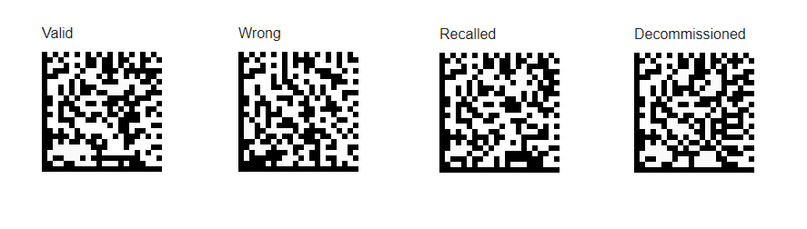
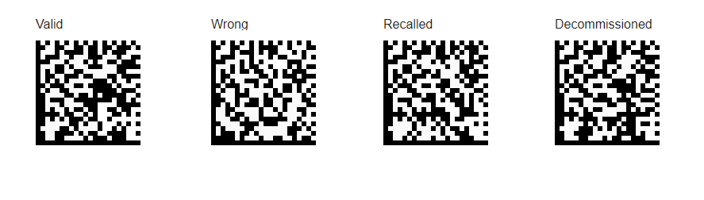
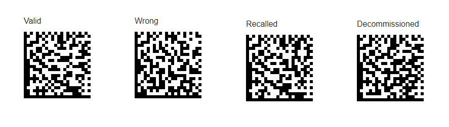

Anti-Counterfeiting Data Collaboration
Demo
Anti-Counterfeiting Data Collaboration
Demo
Demonstration of Anti-Counterfeiting Data Collaboration, using blockchain - through
OpenDSU technology.
The Enterprise & Patient Wallet above (which are
easily compiled to native mobile Android/iOS application) are Progressive Web Applications
compatible with modern (>2016) mobile browsers.
The Backoffice Centralized Application is a regular web application,
compatible with modern browsers (both desktop and mobile , >2016).
Below are the available Authentication Features SSIs::
|
Marketing Authorization Holder |
Wholesaler |
Pharmacy |
| Id |
|
|
|
| KeySSI |
|
|
|
To integrate an Authentication Feature into a batch DSU, during it's creation check the 'Enable Authentication Feature' checkbox
and enter the value for the Authentication Feature KeySSI (above);
When Scanning this batch with the EPI app, you will see a message in orange informing you that an action is required to verify the pack.
You can then click the 'Verify Pack' button. This will launch the authentication feature;
You will see some details of the product can click the scan button. if you scan the same code as before,
you will be sent back to the EPI app with a Sucess message. If you scan any other code, the message will be a failure.
0.7.0 - release notes 2021-10-26
Closed iOS demo data (not for PWA site-scans)
- Authentication feature 59k3
Add publicly-accessible demonstration instructions here! (Replace and remove this note when finish)
Must have elements:
- Picture of the data matrixes of the products to scan, along with expected authentication features and results.
- Other explanatory notes (such as ePi preferences setup requirements, and how to access the ACDC Demonstrator to view remote scan reports.
- (Internal for developers)TODO: Deployment of keySSI of the authentication features should be built into the acdc-workspace octopus (and later Dockerfile deployment). (keySSIs change on every build ? Probably yes!)
- (Internal for developers)TODO: Provisioning of the authentication features selected for each batch should use the previously defined keySSI. Update mapping engine setup with those extra fields.
0.6.1 - release notes 2021-09-08
- Added instructions for the Authentication features integration and testing
- Mobile:
- Demo page for the Native Camera API bug fixes;
0.6.0 - release notes 2021-09-06
- Integration of Authentication features in the Leaflet SSApp;
- Update of DSU fabric and the Mapping engine to handle a new Batch Property - Authentication feature SSI;
- Standardization of Native APIs (Camera in this case) for all environments, available for every SSApp launched
- Creation of Demo Authentication Feature SSApp;
- Implemented communication mechanism between Authentication feature SSApp and Parent SSApp;
- Implemented ACDC Reporting (when selected by user) for the Authentication Feature Scan Results;
- Mobile:
- Inclusion of TrueMed's Native Camera SDK and Alpvision's JS Wrapper in the project;
- Integration of AlpVision JS Wrapper into the new Standard Camera API;
- Environment Dependent Camera API deployment;
v0.5.12 - Release notes 2021-07-19
v0.5.10 - Release notes 2021-06-23
v0.5.9 - Release notes 2021-06-17
- Pré-provisioned data matrixes to scan with the
 Patient Wallet,
Patient Wallet,
-
Important: For the scan to be caught in the ACDC Demo
it is necessary to enable the permissions in Patient Wallet Settings (menu icon in the left corner) > Setup Anti-Counterfeiting Integration option.
- Enable Anti-Counterfeit Validation? Yes
- Share de-identified marker for Anti-Counterfeiting purposes? Yes
- Share location when scanning for Anti-Counterfeiting purposes? Yes
- Cosentyx, Novartis, GTIN 02113100000011, Batch MAY1701, Expiry: 2022-Apr-30

- Keytruda, MSD, GTIN 01133111111118, Batch MAY1702, Expiry: 2022-Apr-30

- Fluarix, GSK, GTIN 01183111111137, Batch MAY1703, Expiry: 2022-Apr-30

-
- Added responsive support for smaller devices.
- Added new properties to scan events.
- Improvement of functional, visible, and clickable elements.
- Fixed session expiration issue to redirect to /login correctly.
- Fixed some issues on event map visualization.
- Added export scans option.
-
Changed the users who can log in to the application:
- admin@somecompany.com
- username@somecompany.com
- password: 123456
- Please use Incognito mode to run the Enterprise Wallet or Patient Wallet (to ensure that you are running the latest).
v0.3.0 - Release notes 2021-05-20
Application description / testing instructions
- To test the feedback on ACDC Demo,
- Log in with your email address as username (use lower-case), and password 123456
(there are no features to sign-up or reset your password yet.)
- Choose menu entry Scan Data > Events.
- There are events with dates between 2021-May-19 and May-20.
- WARNING: When displaying more that 500 events at one time, your browser may slow down.
(the actual limit depends on your browser and network speed,
so reharse up to what point you can increase.)
v0.2.0 - Release notes 2021-05-06
WARNING: Unstable software and environments. Use at your own risk! Data persistence at risk of un-expected reset!
Application description / testing instructions
 Enterprise Wallet App (for MAH users):
Enterprise Wallet App (for MAH users):
- On the first usage, you need to register a username password to open the wallet. (Re-used from ePi)
- (See ePi instructions...)
- Patient Wallet App:
- On the first usage, you need to register a username password to open the wallet. (Re-used from ePi)
- (See ePi instructions...)
- Backoffice Centralized Application (one for each MAH):
- Login with a user .....@pdmfc.com , and access the menu "Scan-Data", "Event". Filter what events are needed, and display them on the "Map".
- Backoffice Centralized REST Services (one for each MAH):
- OpenAPI description/test page.
Relevant services:
- /borest/scan upload one scan event data (public access)
- /borest/acdc/event download all event data (authenticated access - please ask pharmaledger dot team at pdmfc dot com for an account).
 DSU Explorer - debug tool to explore DSUs anchored on the blockchain (Re-used from ePi).
DSU Explorer - debug tool to explore DSUs anchored on the blockchain (Re-used from ePi).
Wallets do not communicate yet, so nothing done on one wallet is visible on other wallets.
Milestones achieved on this release, compared to the plan ....docx:
- M1 OpenDSU Solution Concept Complete - using ePi unchanged - work in progress.
- M2 Development Environment Setup Complete - complete 100% - development environment available at https://acdc-dev.pharmaledger.pdmfc.com/.
- M3 Business Test Environment Setup Complete - complete 100% - environment available at https://acdc.pharmaledger.pdmfc.com/.
- M4 ACDC Backoffice Web Application Concet Setup - REST service to upload and download scan events available for experimentation.
PDM welcomes technical contributions at https://github.com/PharmaLedger-IMI/acdc-workspace